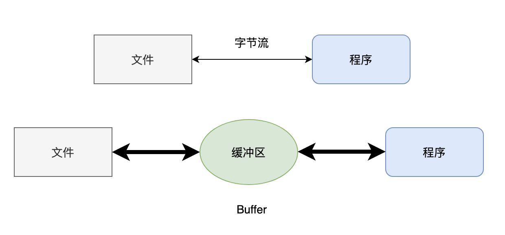
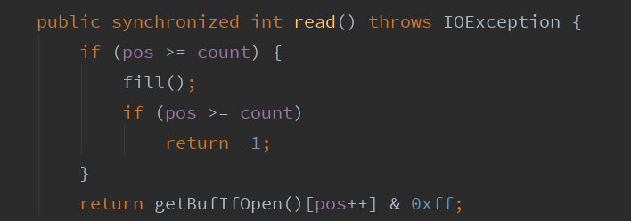
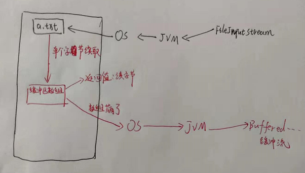
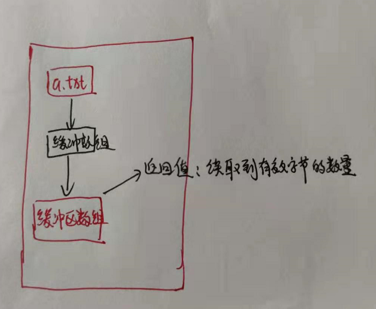
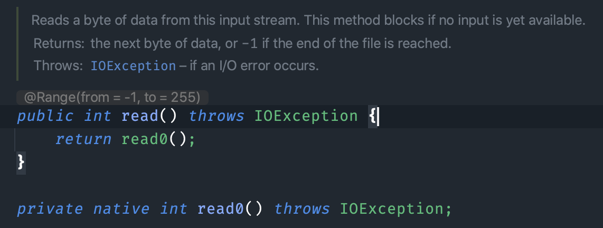
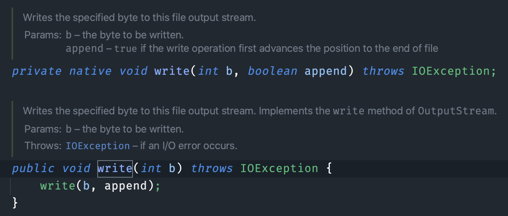

Java基础
多线程基础
source from https://liaoxuefeng.com/books/java/threading/basic/index.html
现代操作系统（Windows，macOS，Linux）都可以执行多任务。多任务就是同时运行多个任务。
CPU执行代码都是一条一条顺序执行的，但是，即使是单核cpu，也可以同时运行多个任务。因为操作系统执行多任务实际上就是让CPU对多个任务轮流交替执行。
例如，假设我们有语文、数学、英语3门作业要做，每个作业需要30分钟。我们把这3门作业看成是3个任务，可以做1分钟语文作业，再做1分钟数学作业，再做1分钟英语作业。
类似的，操作系统轮流让多个任务交替执行，例如，让浏览器执行0.001秒，让QQ执行0.001秒，再让音乐播放器执行0.001秒，在人看来，CPU就是在同时执行多个任务。
即使是多核CPU，因为通常任务的数量远远多于CPU的核数，所以任务也是交替执行的。
进程
在计算机中，我们把一个任务称为一个进程，浏览器就是一个进程，视频播放器是另一个进程，类似的，音乐播放器和Word都是进程。
某些进程内部还需要同时执行多个子任务。例如，我们在使用Word时，Word可以让我们一边打字，一边进行拼写检查，同时还可以在后台进行打印，我们把子任务称为线程。
进程和线程的关系就是：一个进程可以包含一个或多个线程，但至少会有一个线程。
1 | ┌──────────┐ |
操作系统调度的最小任务单位其实不是进程，而是线程。常用的Windows、Linux等操作系统都采用抢占式多任务，如何调度线程完全由操作系统决定，程序自己不能决定什么时候执行，以及执行多长时间。
因为同一个应用程序，既可以有多个进程，也可以有多个线程，因此，实现多任务的方法，有以下几种：
多进程模式（每个进程只有一个线程）：
1 | ┌──────────┐ ┌──────────┐ ┌──────────┐ |
多线程模式（一个进程有多个线程）：
1 | ┌────────────────────┐ |
多进程＋多线程模式（复杂度最高）：
1 | ┌──────────┐┌──────────┐┌──────────┐ |
进程 vs 线程
进程和线程是包含关系，但是多任务既可以由多进程实现，也可以由单进程内的多线程实现，还可以混合多进程＋多线程。
具体采用哪种方式，要考虑到进程和线程的特点。
和多线程相比，多进程的缺点在于：
- 创建进程比创建线程开销大，尤其是在Windows系统上；
- 进程间通信比线程间通信要慢，因为线程间通信就是读写同一个变量，速度很快。
而多进程的优点在于：
多进程稳定性比多线程高，因为在多进程的情况下，一个进程崩溃不会影响其他进程，而在多线程的情况下，任何一个线程崩溃会直接导致整个进程崩溃。
多线程
Java语言内置了多线程支持：一个Java程序实际上是一个JVM进程，JVM进程用一个主线程来执行main()方法，在main()方法内部，我们又可以启动多个线程。此外，JVM还有负责垃圾回收的其他工作线程等。
因此，对于大多数Java程序来说，我们说多任务，实际上是说如何使用多线程实现多任务。
和单线程相比，多线程编程的特点在于：多线程经常需要读写共享数据，并且需要同步。例如，播放电影时，就必须由一个线程播放视频，另一个线程播放音频，两个线程需要协调运行，否则画面和声音就不同步。因此，多线程编程的复杂度高，调试更困难。
Java多线程编程的特点又在于：
- 多线程模型是Java程序最基本的并发模型；
- 后续读写网络、数据库、Web开发等都依赖Java多线程模型。
创建新线程
Java语言内置了多线程支持。当Java程序启动的时候，实际上是启动了一个JVM进程，然后，JVM启动主线程来执行main()方法。在main()方法中，我们又可以启动其他线程。
要创建一个新线程非常容易，我们需要实例化一个Thread实例，然后调用它的start()方法：
1 | // 多线程 |
但是这个线程启动后实际上什么也不做就立刻结束了。我们希望新线程能执行指定的代码，有以下几种方法：
方法一：从Thread派生一个自定义类，然后覆写run()方法：
1 | // 多线程 |
执行上述代码，注意到start()方法会在内部自动调用实例的run()方法。
方法二：创建Thread实例时，传入一个Runnable实例：
1 | // 多线程 |
或者用Java 8引入的lambda语法进一步简写为：
1 | // 多线程 |
有童鞋会问，使用线程执行的打印语句，和直接在main()方法执行有区别吗？
区别大了去了。我们看以下代码：
1 | public class Main { |
我们用蓝色表示主线程，也就是main线程，main线程执行的代码有4行，首先打印main start，然后创建Thread对象，紧接着调用start()启动新线程。当start()方法被调用时，JVM就创建了一个新线程，我们通过实例变量t来表示这个新线程对象，并开始执行。
接着，main线程继续执行打印main end语句，而t线程在main线程执行的同时会并发执行，打印thread run和thread end语句。
当run()方法结束时，新线程就结束了。而main()方法结束时，主线程也结束了。
我们再来看线程的执行顺序：
main线程肯定是先打印main start，再打印main end；t线程肯定是先打印thread run，再打印thread end。
但是，除了可以肯定，main start会先打印外，main end打印在thread run之前、thread end之后或者之间，都无法确定。因为从t线程开始运行以后，两个线程就开始同时运行了，并且由操作系统调度，程序本身无法确定线程的调度顺序。
要模拟并发执行的效果，我们可以在线程中调用Thread.sleep()，强迫当前线程暂停一段时间：
1 | // 多线程 |
sleep()传入的参数是毫秒。调整暂停时间的大小，我们可以看到main线程和t线程执行的先后顺序。
要特别注意：直接调用Thread实例的run()方法是无效的：
1 | public class Main { |
直接调用run()方法，相当于调用了一个普通的Java方法，当前线程并没有任何改变，也不会启动新线程。上述代码实际上是在main()方法内部又调用了run()方法，打印hello语句是在main线程中执行的，没有任何新线程被创建。
必须调用Thread实例的start()方法才能启动新线程，如果我们查看Thread类的源代码，会看到start()方法内部调用了一个private native void start0()方法，native修饰符表示这个方法是由JVM虚拟机内部的C代码实现的，不是由Java代码实现的。
线程的优先级
可以对线程设定优先级，设定优先级的方法是：
1 | Thread.setPriority(int n) // 1~10, 默认值5 |
JVM自动把1（低）~10（高）的优先级映射到操作系统实际优先级上（不同操作系统有不同的优先级数量）。优先级高的线程被操作系统调度的优先级较高，操作系统对高优先级线程可能调度更频繁，但我们决不能通过设置优先级来确保高优先级的线程一定会先执行。
小结
Java用Thread对象表示一个线程，通过调用start()启动一个新线程；
一个线程对象只能调用一次start()方法；
线程的执行代码写在run()方法中；
线程调度由操作系统决定，程序本身无法决定调度顺序；
Thread.sleep()可以把当前线程暂停一段时间。
线程的状态
在Java程序中，一个线程对象只能调用一次start()方法启动新线程，并在新线程中执行run()方法。一旦run()方法执行完毕，线程就结束了。因此，Java线程的状态有以下几种：
- New：新创建的线程，尚未执行；
- Runnable：运行中的线程，正在执行
run()方法的Java代码； - Blocked：运行中的线程，因为某些操作被阻塞而挂起；
- Waiting：运行中的线程，因为某些操作在等待中；
- Timed Waiting：运行中的线程，因为执行
sleep()方法正在计时等待； - Terminated：线程已终止，因为
run()方法执行完毕。
用一个状态转移图表示如下：
1 | ┌─────────────┐ |
当线程启动后，它可以在Runnable、Blocked、Waiting和Timed Waiting这几个状态之间切换，直到最后变成Terminated状态，线程终止。
线程终止的原因有：
- 线程正常终止：
run()方法执行到return语句返回； - 线程意外终止：
run()方法因为未捕获的异常导致线程终止； - 对某个线程的
Thread实例调用stop()方法强制终止（强烈不推荐使用）。
一个线程还可以等待另一个线程直到其运行结束。例如，main线程在启动t线程后，可以通过t.join()等待t线程结束后再继续运行：
1 | // 多线程 |
当main线程对线程对象t调用join()方法时，主线程将等待变量t表示的线程运行结束，即join就是指等待该线程结束，然后才继续往下执行自身线程。所以，上述代码打印顺序可以肯定是main线程先打印start，t线程再打印hello，main线程最后再打印end。
如果t线程已经结束，对实例t调用join()会立刻返回。此外，join(long)的重载方法也可以指定一个等待时间，超过等待时间后就不再继续等待。
小结
Java线程对象Thread的状态包括：New、Runnable、Blocked、Waiting、Timed Waiting和Terminated；
通过对另一个线程对象调用join()方法可以等待其执行结束；
可以指定等待时间，超过等待时间线程仍然没有结束就不再等待；
对已经运行结束的线程调用join()方法会立刻返回。
中断线程
如果线程需要执行一个长时间任务，就可能需要能中断线程。中断线程就是其他线程给该线程发一个信号，该线程收到信号后结束执行run()方法，使得自身线程能立刻结束运行。
我们举个栗子：假设从网络下载一个100M的文件，如果网速很慢，用户等得不耐烦，就可能在下载过程中点“取消”，这时，程序就需要中断下载线程的执行。
中断一个线程非常简单，只需要在其他线程中对目标线程调用interrupt()方法，目标线程需要反复检测自身状态是否是interrupted状态，如果是，就立刻结束运行。
我们还是看示例代码：
1 | // 中断线程 |
仔细看上述代码，main线程通过调用t.interrupt()方法中断t线程，但是要注意，interrupt()方法仅仅向t线程发出了“中断请求”，至于t线程是否能立刻响应，要看具体代码。而t线程的while循环会检测isInterrupted()，所以上述代码能正确响应interrupt()请求，使得自身立刻结束运行run()方法。
如果线程处于等待状态，例如，t.join()会让main线程进入等待状态，此时，如果对main线程调用interrupt()，join()方法会立刻抛出InterruptedException，因此，目标线程只要捕获到join()方法抛出的InterruptedException，就说明有其他线程对其调用了interrupt()方法，通常情况下该线程应该立刻结束运行。
我们来看下面的示例代码：
1 | // 中断线程 |
main线程通过调用t.interrupt()从而通知t线程中断，而此时t线程正位于hello.join()的等待中，此方法会立刻结束等待并抛出InterruptedException。由于我们在t线程中捕获了InterruptedException，因此，就可以准备结束该线程。在t线程结束前，对hello线程也进行了interrupt()调用通知其中断。如果去掉这一行代码，可以发现hello线程仍然会继续运行，且JVM不会退出。
另一个常用的中断线程的方法是设置标志位。我们通常会用一个running标志位来标识线程是否应该继续运行，在外部线程中，通过把HelloThread.running置为false，就可以让线程结束：
1 | // 中断线程 |
注意到HelloThread的标志位boolean running是一个线程间共享的变量。线程间共享变量需要使用volatile关键字标记，确保每个线程都能读取到更新后的变量值。
为什么要对线程间共享的变量用关键字volatile声明？这涉及到Java的内存模型。在Java虚拟机中，变量的值保存在主内存中，但是，当线程访问变量时，它会先获取一个副本，并保存在自己的工作内存中。如果线程修改了变量的值，虚拟机会在某个时刻把修改后的值回写到主内存，但是，这个时间是不确定的！
1 | ┌ ─ ─ ─ ─ ─ ─ ─ ─ ─ ─ ─ ─ ─ ─ ─ ┐ |
这会导致如果一个线程更新了某个变量，另一个线程读取的值可能还是更新前的。例如，主内存的变量a = true，线程1执行a = false时，它在此刻仅仅是把变量a的副本变成了false，主内存的变量a还是true，在JVM把修改后的a回写到主内存之前，其他线程读取到的a的值仍然是true，这就造成了多线程之间共享的变量不一致。
因此，volatile关键字的目的是告诉虚拟机：
- 每次访问变量时，总是获取主内存的最新值；
- 每次修改变量后，立刻回写到主内存。
volatile关键字解决的是可见性问题：当一个线程修改了某个共享变量的值，其他线程能够立刻看到修改后的值。
如果我们去掉volatile关键字，运行上述程序，发现效果和带volatile差不多，这是因为在x86的架构下，JVM回写主内存的速度非常快，但是，换成ARM的架构，就会有显著的延迟。
小结
对目标线程调用interrupt()方法可以请求中断一个线程，目标线程通过检测isInterrupted()标志获取自身是否已中断。如果目标线程处于等待状态，该线程会捕获到InterruptedException；
目标线程检测到isInterrupted()为true或者捕获了InterruptedException都应该立刻结束自身线程；
通过标志位判断需要正确使用volatile关键字；
volatile关键字解决了共享变量在线程间的可见性问题。
守护线程
Java程序入口就是由JVM启动main线程，main线程又可以启动其他线程。当所有线程都运行结束时，JVM退出，进程结束。
如果有一个线程没有退出，JVM进程就不会退出。所以，必须保证所有线程都能及时结束。
但是有一种线程的目的就是无限循环，例如，一个定时触发任务的线程：
1 | class TimerThread extends Thread { |
如果这个线程不结束，JVM进程就无法结束。问题是，由谁负责结束这个线程？
然而这类线程经常没有负责人来负责结束它们。但是，当其他线程结束时，JVM进程又必须要结束，怎么办？
答案是使用守护线程（Daemon Thread）。
守护线程 就是大家常说的 Daemon Thread 线程也叫 后台线程，是程序运行时在后台提供的一种通用服务的线程。
比如垃圾回收线程就是一个很称职的守护者，并且这种线程并不属于程序中不可或缺的部分。因此，当所有的非守护线程结束时，程序也就终止了，同时会杀死进程中的所有守护线程。反过来说，只要任何非守护线程还在运行，程序就不会终止。事实上，User Thread（用户线程）和 Daemon Thread（守护线程）从本质上来说并没有什么区别，唯一的不同之处就在于虚拟机的离开：如果用户线程已经全部退出运行了，只剩下守护线程存在了，虚拟机也就退出了。 因为没有了被守护者，守护线程也就没有工作可做了，也就没有继续运行程序的必要了。
守护线程是指为其他线程服务的线程。在JVM中，所有非守护线程都执行完毕后，无论有没有守护线程，虚拟机都会自动退出。
因此，JVM退出时，不必关心守护线程是否已结束。
如何创建守护线程呢？方法和普通线程一样，只是在调用start()方法前，调用setDaemon(true)把该线程标记为守护线程：
1 | Thread t = new MyThread(); |
在守护线程中，编写代码要注意：守护线程不能持有任何需要关闭的资源，例如打开文件等，因为虚拟机退出时，守护线程没有任何机会来关闭文件，这会导致数据丢失。
小结
守护线程是为其他线程服务的线程；
所有非守护线程都执行完毕后，虚拟机退出，守护线程随之结束；
守护线程不能持有需要关闭的资源（如打开文件等）。
守护线程就是用来告诉JVM，我的这个线程是一个低级别的线程，不需要等待它运行完才退出，让JVM喜欢什么时候退出就退出，不用管这个线程。
线程同步
当多个线程同时运行时，线程的调度由操作系统决定，程序本身无法决定。因此，任何一个线程都有可能在任何指令处被操作系统暂停，然后在某个时间段后继续执行。
这个时候，有个单线程模型下不存在的问题就来了：如果多个线程同时读写共享变量，会出现数据不一致的问题。
我们来看一个例子：
1 | // 多线程 |
上面的代码很简单，两个线程同时对一个int变量进行操作，一个加10000次，一个减10000次，最后结果应该是0，但是，每次运行，结果实际上都是不一样的。
这是因为对变量进行读取和写入时，结果要正确，必须保证是原子操作。原子操作是指不能被中断的一个或一系列操作。
例如，对于语句：
1 | n = n + 1; |
看上去是一行语句，实际上对应了3条指令：
1 | ILOAD |
我们假设n的值是100，如果两个线程同时执行n = n + 1，得到的结果很可能不是102，而是101，原因在于：
1 | ┌───────┐ ┌───────┐ |
如果线程1在执行ILOAD后被操作系统中断，此刻如果线程2被调度执行，它执行ILOAD后获取的值仍然是100，最终结果被两个线程的ISTORE写入后变成了101，而不是期待的102。
这说明多线程模型下，要保证逻辑正确，对共享变量进行读写时，必须保证一组指令以原子方式执行：即某一个线程执行时，其他线程必须等待：
1 | ┌───────┐ ┌───────┐ |
通过加锁和解锁的操作，就能保证3条指令总是在一个线程执行期间，不会有其他线程会进入此指令区间。即使在执行期线程被操作系统中断执行，其他线程也会因为无法获得锁导致无法进入此指令区间。只有执行线程将锁释放后，其他线程才有机会获得锁并执行。这种加锁和解锁之间的代码块我们称之为临界区（Critical Section），任何时候临界区最多只有一个线程能执行。
可见，保证一段代码的原子性就是通过加锁和解锁实现的。Java程序使用synchronized关键字对一个对象进行加锁：
1 | synchronized(lock) { |
synchronized保证了代码块在任意时刻最多只有一个线程能执行。我们把上面的代码用synchronized改写如下：
1 | // 多线程 |
注意到代码：
1 | synchronized(Counter.lock) { // 获取锁 |
它表示用Counter.lock实例作为锁，两个线程在执行各自的synchronized(Counter.lock) { ... }代码块时，必须先获得锁，才能进入代码块进行。执行结束后，在synchronized语句块结束会自动释放锁。这样一来，对Counter.count变量进行读写就不可能同时进行。上述代码无论运行多少次，最终结果都是0。
使用synchronized解决了多线程同步访问共享变量的正确性问题。但是，它的缺点是带来了性能下降。因为synchronized代码块无法并发执行。此外，加锁和解锁需要消耗一定的时间，所以，synchronized会降低程序的执行效率。
我们来概括一下如何使用synchronized：
- 找出修改共享变量的线程代码块；
- 选择一个共享实例作为锁；
- 使用
synchronized(lockObject) { ... }。
在使用synchronized的时候，不必担心抛出异常。因为无论是否有异常，都会在synchronized结束处正确释放锁：
1 | public void add(int m) { |
我们再来看一个错误使用synchronized的例子：
1 | // 多线程 |
结果并不是0，这是因为两个线程各自的synchronized锁住的不是同一个对象！这使得两个线程各自都可以同时获得锁：因为JVM只保证同一个锁在任意时刻只能被一个线程获取，但两个不同的锁在同一时刻可以被两个线程分别获取。
因此，使用synchronized的时候，获取到的是哪个锁非常重要。锁对象如果不对，代码逻辑就不对。
我们再看一个例子：
1 | // 多线程 |
上述代码的4个线程对两个共享变量分别进行读写操作，但是使用的锁都是Counter.lock这一个对象，这就造成了原本可以并发执行的Counter.studentCount += 1和Counter.teacherCount += 1，现在无法并发执行了，执行效率大大降低。实际上，需要同步的线程可以分成两组：AddStudentThread和DecStudentThread，AddTeacherThread和DecTeacherThread，组之间不存在竞争，因此，应该使用两个不同的锁，即：
AddStudentThread和DecStudentThread使用lockStudent锁：
1 | synchronized(Counter.lockStudent) { |
AddTeacherThread和DecTeacherThread使用lockTeacher锁：
1 | synchronized(Counter.lockTeacher) { |
这样才能最大化地提高执行效率。
不需要synchronized的操作
原子操作的定义
原子性（Atomicity） 是指某个操作不可分割，要么全部执行成功，要么完全不执行。
在多线程环境下，如果一个操作是原子操作，就不会出现线程安全问题。
根据 JVM 规范，以下操作是天然线程安全的原子操作，无需使用 synchronized 或其他同步机制
1. 基本类型赋值（long 和 double 除外）
1 | int x = 10; // 原子操作 |
JVM 中的基本类型（int、short、byte、char、float、boolean）赋值是单步操作，线程不会在操作中途被切换，因此是安全的。
例外情况：long 和 double 是 64 位的，在 32 位的 JVM 中赋值可能会被分为两步操作（高位和低位），因此不保证原子性：
long l = 100L; // 非原子操作（可能被拆分为两步） double d = 10.5; // 非原子操作（可能被拆分为两步）1
2
3
4
5
6
- **解决方法：**使用 volatile 修饰 long 或 double，可以保证其赋值操作是原子的：
- ```java
volatile long l = 100L;
volatile double d = 10.5;
2. 引用类型赋值
1 | List<String> list = new ArrayList<>(); // 原子操作 |
引用赋值（将一个对象的引用赋值给变量）是原子操作，因为 JVM 保证引用赋值操作是不可分割的。
为什么是线程安全的？引用赋值操作仅更改变量的指针（引用），不涉及对象本身的内容，操作是一步完成的，因此不存在中断或数据不一致问题。
3. 读取和写入 volatile 变量
volatile 的特性：
- 保证对变量的 可见性（一个线程修改后，其他线程立即可见）。
- 对于单次的读取和写入操作，volatile 是原子的。
1 | volatile int count = 0; |
注意事项：非原子的复合操作
尽管赋值是原子的，但复合操作不是。例如：自增和自减
1 | int count = 0; |
count++ 的实际操作是：
- 读取 count 的值。
- 将值加 1。
- 将结果写回 count。
多个线程同时执行 count++ 时，可能发生竞态条件，导致结果不正确。
不可变对象无需同步
如果多线程读写的是一个不可变对象，那么无需同步，因为不会修改对象的状态：
1 | class Data { |
注意到set()方法内部创建了一个不可变List，这个List包含的对象也是不可变对象String，因此，整个List<String>对象都是不可变的，因此读写均无需同步。
分析变量是否能被多线程访问时，首先要理清概念，多线程同时执行的是方法。对于下面这个例子：
1 | class Status { |
1.多线程执行方法时的可能场景
假设有两个线程 A 和 B，同时对 Status 类操作，以下情况可能发生：
- 同时执行 set() 方法：两个线程可能同时写入共享变量 names、x 和 y。
- 同时执行 get() 方法：两个线程可能同时读取 names、x 和 y，这不会导致问题，因为读取是线程安全的。
- 一个线程执行 set()，另一个线程执行 get()：这是关键问题，因为一个线程在写共享变量时，另一个线程正在读取这些变量，可能导致读取到不一致的数据。
2.局部变量的线程安全性
- 局部变量是线程安全的，因为它们存储在每个线程的栈上，线程栈是独立的，互不干扰。
- 只要局部变量没有逃逸（没有被外部引用或传递到其他线程），它们的生命周期和作用范围仅限于当前线程。
在 set() 方法中：
1 | List<String> ns = List.of(names); |
ns 和 step 是局部变量：
- 每个线程调用 set() 时都会在自己线程的栈中创建独立的 ns 和 step。
- 即使两个线程同时调用 set()，它们各自的 ns 和 step 互不干扰。
局部变量的逃逸：
1 | this.names = ns; |
当 ns 被赋值给类的成员变量 this.names 时，ns 的引用变得可见于其他线程。
这意味着其他线程可能同时读取或写入 names，需要通过同步机制保护。
3. 同步的必要性
为什么同步？
- 成员变量（如* names、x、y）是共享资源：
- 它们存储在堆上，可以被多个线程访问。
- 如果没有同步机制，可能会发生竞态条件（Race Condition），导致数据不一致。
- 在 set() 中，this.names = ns; 和 this.x += step;、this.y += step; 是对共享变量的修改，必须通过 synchronized 来保护。
优化后的代码：
1 | void set(String[] names, int n) { |
仅对修改共享资源的代码加锁（this.names、this.x、this.y）。好处：
- 避免了锁定整个方法，提升性能。
- 局部变量仍然在线程的栈中，完全不受同步影响。
4. get() 方法中的问题
在多线程环境中，如果一个线程执行 set() 时，另一个线程正在执行 get()，可能导致数据不一致：
1 | StatusRecord get() { |
- get() 方法直接返回共享变量 names、x、y 的值，但它们可能正在被另一个线程修改。
- 如果要保证读取时的一致性，可以对 get() 加锁：
1 | synchronized(this) { |
完整代码：
1 | class Status { |
synchronized (this) 和 synchronized StatusRecord get() 使用的是同一个锁，即当前对象实例的锁（this 的锁）。
synchronized (this) 的锁
- synchronized (this) 显式指定锁对象为 this，即当前 Status 类的实例。
- 每个实例都有自己独立的锁，多个线程要想进入 synchronized (this) 保护的代码块，必须先获取当前对象实例的锁。
synchronized 方法的锁
声明为 synchronized 的非静态方法（如 synchronized StatusRecord get()）隐式地锁定当前实例对象。
等效于在方法体外包裹 synchronized (this)：
StatusRecord get() { synchronized (this) { // 锁定当前对象 return new StatusRecord(this.names, this.x, this.y); } }
2
3
4
5
6
7
8
9
- **静态方法的不同**：如果方法是 static synchronized，它使用的锁是**类对象的锁**（Class 对象的锁），而不是实例锁。
- ```java
StatusRecord get() {
synchronized (this) { // 锁定当前对象
return new StatusRecord(this.names, this.x, this.y);
}
}static synchronized 使用的锁是 Status.class。
它与 synchronized (this) 和非静态 synchronized 方法使用的锁不同。
demo:
1 | public class Main { |
线程 A 获取锁：
- 线程 A 在进入 set() 方法时，锁定了 this。
- 其他线程必须等待线程 A 完成并释放锁。
线程 B 被阻塞：
- 线程 B 调用 get() 时，发现 this 的锁已被线程 A 占用。
- 线程 B 进入阻塞状态，直到线程 A 释放锁。
互斥保证一致性：
- 无论线程 A 如何修改共享变量，线程 B 在读取时都能看到完整的状态，不会读取到中间状态的数据。
同步方法
我们知道Java程序依靠synchronized对线程进行同步，使用synchronized的时候，锁住的是哪个对象非常重要。
让线程自己选择锁对象往往会使得代码逻辑混乱，也不利于封装。更好的方法是把synchronized逻辑封装起来。例如，我们编写一个计数器如下：
1 | public class Counter { |
这样一来，线程调用add()、dec()方法时，它不必关心同步逻辑，因为synchronized代码块在add()、dec()方法内部。并且，我们注意到，synchronized锁住的对象是this，即当前实例，这又使得创建多个Counter实例的时候，它们之间互不影响，可以并发执行：
1 | var c1 = Counter(); |
现在，对于Counter类，多线程可以正确调用。
如果一个类被设计为允许多线程正确访问，我们就说这个类就是“线程安全”的（thread-safe），上面的Counter类就是线程安全的。Java标准库的java.lang.StringBuffer也是线程安全的。
还有一些不变类，例如String，Integer，LocalDate，它们的所有成员变量都是final，多线程同时访问时只能读不能写，这些不变类也是线程安全的。
最后，类似Math这些只提供静态方法，没有成员变量的类，也是线程安全的。
除了上述几种少数情况，大部分类，例如ArrayList，都是非线程安全的类，我们不能在多线程中修改它们。但是，如果所有线程都只读取，不写入，那么ArrayList是可以安全地在线程间共享的。
提示
没有特殊说明时，一个类默认是非线程安全的。
我们再观察Counter的代码：
1 | public class Counter { |
当我们锁住的是this实例时，实际上可以用synchronized修饰这个方法。下面两种写法是等价的：
1 | public void add(int n) { |
写法二：
1 | public synchronized void add(int n) { // 锁住this |
因此，用synchronized修饰的方法就是同步方法，它表示整个方法都必须用this实例加锁。
我们再思考一下，如果对一个静态方法添加synchronized修饰符，它锁住的是哪个对象？
1 | public synchronized static void test(int n) { |
对于static方法，是没有this实例的，因为static方法是针对类而不是实例。但是我们注意到任何一个类都有一个由JVM自动创建的Class实例，因此，对static方法添加synchronized，锁住的是该类的Class实例。上述synchronized static方法实际上相当于：
1 | public class Counter { |
我们再考察Counter的get()方法：
1 | public class Counter { |
它没有同步，因为读一个int变量不需要同步。
读取 count 是原子的，int 类型的变量在读取时不会受到中断。
因此，在多线程环境中，即使其他线程同时修改 count，读取操作仍然是安全的。
然而，如果我们把代码稍微改一下，返回一个包含两个int的对象：
1 | public class Counter { |
就必须要同步了。
问题分析：
- first 和 last 是两个独立的变量。
- 在多线程环境中，如果一个线程调用 get() 方法，另一个线程正在修改 first 或 last，就可能导致读取到的值不一致。
- 例如：
- 线程 A： 正在调用 get()，读取 first 的值。
- 线程 B： 在此时修改了 last。
- 结果： get() 返回的 Pair 对象中的 first 和 last 可能属于不同的时间点的状态，数据不一致。
死锁
Java的线程锁是可重入的锁。
什么是可重入的锁？我们还是来看例子：
1 | public class Counter { |
观察synchronized修饰的add()方法，一旦线程执行到add()方法内部，说明它已经获取了当前实例的this锁。如果传入的n < 0，将在add()方法内部调用dec()方法。由于dec()方法也需要获取this锁，现在问题来了：
对同一个线程，能否在获取到锁以后继续获取同一个锁？
答案是肯定的。JVM允许同一个线程重复获取同一个锁，这种能被同一个线程反复获取的锁，就叫做可重入锁。
由于Java的线程锁是可重入锁，所以，获取锁的时候，不但要判断是否是第一次获取，还要记录这是第几次获取。每获取一次锁，记录+1，每退出synchronized块，记录-1，减到0的时候，才会真正释放锁。
死锁
一个线程可以获取一个锁后，再继续获取另一个锁。例如：
1 | public void add(int m) { |
在获取多个锁的时候，不同线程获取多个不同对象的锁可能导致死锁。对于上述代码，线程1和线程2如果分别执行add()和dec()方法时：
- 线程1：进入
add()，获得lockA； - 线程2：进入
dec()，获得lockB。
随后：
- 线程1：准备获得
lockB，失败，等待中； - 线程2：准备获得
lockA，失败，等待中。
此时，两个线程各自持有不同的锁，然后各自试图获取对方手里的锁，造成了双方无限等待下去，这就是死锁。
死锁发生后，没有任何机制能解除死锁，只能强制结束JVM进程。
因此，在编写多线程应用时，要特别注意防止死锁。因为死锁一旦形成，就只能强制结束进程。
那么我们应该如何避免死锁呢？答案是：线程获取锁的顺序要一致。即严格按照先获取lockA，再获取lockB的顺序，改写dec()方法如下：
1 | public void dec(int m) { |
使用wait和notify
在Java程序中，synchronized解决了多线程竞争的问题。例如，对于一个任务管理器，多个线程同时往队列中添加任务，可以用synchronized加锁：
1 | class TaskQueue { |
但是synchronized并没有解决多线程协调的问题。
仍然以上面的TaskQueue为例，我们再编写一个getTask()方法取出队列的第一个任务：
1 | class TaskQueue { |
上述代码看上去没有问题：getTask()内部先判断队列是否为空，如果为空，就循环等待，直到另一个线程往队列中放入了一个任务，while()循环退出，就可以返回队列的元素了。
但实际上while()循环永远不会退出。因为线程在执行while()循环时，已经在getTask()入口获取了this锁，其他线程根本无法调用addTask()，因为addTask()执行条件也是获取this锁。
因此，执行上述代码，线程会在getTask()中因为死循环而100%占用CPU资源。
如果深入思考一下，我们想要的执行效果是：
- 线程1可以调用
addTask()不断往队列中添加任务； - 线程2可以调用
getTask()从队列中获取任务。如果队列为空，则getTask()应该等待，直到队列中至少有一个任务时再返回。
因此，多线程协调运行的原则就是：当条件不满足时，线程进入等待状态；当条件满足时，线程被唤醒，继续执行任务。
对于上述TaskQueue，我们先改造getTask()方法，在条件不满足时，线程进入等待状态：
1 | public synchronized String getTask() { |
当一个线程执行到getTask()方法内部的while循环时，它必定已经获取到了this锁，此时，线程执行while条件判断，如果条件成立（队列为空），线程将执行this.wait()，进入等待状态。
这里的关键是：wait()方法必须在当前获取的锁对象上调用，这里获取的是this锁，因此调用this.wait()。
调用wait()方法后，线程进入等待状态，wait()方法不会返回，直到将来某个时刻，线程从等待状态被其他线程唤醒后，wait()方法才会返回，然后，继续执行下一条语句。
有些仔细的童鞋会指出：即使线程在getTask()内部等待，其他线程如果拿不到this锁，照样无法执行addTask()，肿么办？
这个问题的关键就在于wait()方法的执行机制非常复杂。首先，它不是一个普通的Java方法，而是定义在Object类的一个native方法，也就是由JVM的C代码实现的。其次，必须在synchronized块中才能调用wait()方法，因为wait()方法调用时，会释放线程获得的锁，wait()方法返回时，线程又会重新试图获得锁。
因此，只能在锁对象上调用wait()方法。因为在getTask()中，我们获得了this锁，因此，只能在this对象上调用wait()方法：
1 | public synchronized String getTask() { |
当一个线程在this.wait()等待时，它就会释放this锁，从而使得其他线程能够在addTask()方法获得this锁。
现在我们面临第二个问题：如何让等待的线程被重新唤醒，然后从wait()方法返回？答案是在相同的锁对象上调用notify()方法。我们修改addTask()如下：
1 | public synchronized void addTask(String s) { |
注意到在往队列中添加了任务后，线程立刻对this锁对象调用notify()方法，这个方法会唤醒一个正在this锁等待的线程（就是在getTask()中位于this.wait()的线程），从而使得等待线程从this.wait()方法返回。
我们来看一个完整的例子：
1 | import java.util.*; |
这个例子中，我们重点关注addTask()方法，内部调用了this.notifyAll()而不是this.notify()，使用notifyAll()将唤醒所有当前正在this锁等待的线程，而notify()只会唤醒其中一个（具体哪个依赖操作系统，有一定的随机性）。这是因为可能有多个线程正在getTask()方法内部的wait()中等待，使用notifyAll()将一次性全部唤醒。通常来说，notifyAll()更安全。有些时候，如果我们的代码逻辑考虑不周，用notify()会导致只唤醒了一个线程，而其他线程可能永远等待下去醒不过来了。
但是，注意到wait()方法返回时需要重新获得this锁。假设当前有3个线程被唤醒，唤醒后，首先要等待执行addTask()的线程结束此方法后，才能释放this锁，随后，这3个线程中只能有一个获取到this锁，剩下两个将继续等待。
再注意到我们在while()循环中调用wait()，而不是if语句：
1 | public synchronized String getTask() throws InterruptedException { |
这种写法实际上是错误的，因为线程被唤醒时，需要再次获取this锁。多个线程被唤醒后，只有一个线程能获取this锁，此刻，该线程执行queue.remove()可以获取到队列的元素，然而，剩下的线程如果获取this锁后执行queue.remove()，此刻队列可能已经没有任何元素了，所以，要始终在while循环中wait()，并且每次被唤醒后拿到this锁就必须再次判断：
1 | while (queue.isEmpty()) { |
所以，正确编写多线程代码是非常困难的，需要仔细考虑的条件非常多，任何一个地方考虑不周，都会导致多线程运行时不正常。
小结
wait和notify用于多线程协调运行：
- 在
synchronized内部可以调用wait()使线程进入等待状态； - 必须在已获得的锁对象上调用
wait()方法； - 在
synchronized内部可以调用notify()或notifyAll()唤醒其他等待线程； - 必须在已获得的锁对象上调用
notify()或notifyAll()方法； - 已唤醒的线程还需要重新获得锁后才能继续执行。
深拷贝与浅拷贝
利用序列化和反序列化实现深拷贝的原理
- 当对一个对象进行序列化时，对象的状态（包括基本数据类型成员变量的值和引用数据类型成员变量所指向对象的状态）会被转换为字节流。在反序列化过程中，会根据字节流重新构建对象。这个重新构建的过程实际上是创建了全新的对象，而不是简单地复制引用。
- 对于引用数据类型的成员变量，会根据字节流中的信息重新创建这些对象，而不是共享原始对象的引用。这样就实现了深拷贝，即新对象和原始对象在内存中是完全独立的，修改其中一个对象不会影响到另一个对象。
示例代码实现步骤
- 步骤一：定义可序列化的类
- 假设有一个
Person类，包含基本数据类型的age和引用数据类型的Address。Address类也需要是可序列化的。
- 假设有一个
- 步骤一：定义可序列化的类
1 | import java.io.Serializable; |
- 步骤二：实现深拷贝的方法
- 在
Person类中可以定义一个方法来进行深拷贝，通过序列化和反序列化来实现。
- 在
1 | import java.io.ByteArrayInputStream; |
这段代码定义了一个名为deepCopy的方法，用于在 Java 中通过序列化和反序列化的机制实现对Person对象的深拷贝。其目的是创建一个与原始Person对象完全独立的副本，使得对副本对象的修改不会影响到原始对象。
代码逐行分析
- 创建字节数组输出流对象
1 | ByteArrayOutputStream bos = new ByteArrayOutputStream(); |
这里创建了一个ByteArrayOutputStream对象bos。ByteArrayOutputStream是一个可以将数据写入字节数组的输出流类。它的作用是在内存中开辟一块缓冲区，用于暂存即将要序列化的Person对象转化成的字节流数据。
- 创建对象输出流对象并关联字节数组输出流
1 | ObjectOutputStream oos = new ObjectOutputStream(bos); |
创建了一个ObjectOutputStream对象oos，并将之前创建的ByteArrayOutputStream对象bos作为参数传递给它。ObjectOutputStream用于将对象转换为字节流进行序列化操作。通过这种关联，后续调用oos.writeObject(this)时，会将Person对象（由this指代当前对象，也就是调用deepCopy方法的那个Person对象）序列化后的字节流数据写入到bos所指向的内存缓冲区中。
- 执行对象序列化操作
1 | oos.writeObject(this); |
这行代码是真正执行对象序列化的步骤。writeObject方法是ObjectOutputStream类的核心方法之一，它会根据Person对象的内部结构（包括其成员变量的类型和值等信息），将整个Person对象转换为字节流，并将这些字节流数据写入到与之关联的ByteArrayOutputStream（即bos）的内存缓冲区中。此时，Person对象的所有状态信息，包括基本数据类型的属性值以及引用数据类型所指向对象的状态（如果引用类型也可序列化），都被转化成了字节流形式存储在bos的缓冲区中。
- 创建字节数组输入流对象
1 | ByteArrayInputStream bis = new ByteArrayInputStream(bos.toByteArray()); |
在完成对象的序列化并将字节流数据暂存到bos的缓冲区后，接下来要进行反序列化操作以重建对象。首先创建一个ByteArrayInputStream对象bis，它的构造函数接受一个字节数组作为参数。这里通过调用bos.toByteArray()获取到存储在ByteArrayOutputStream缓冲区中的字节流数据数组，并将其作为参数传递给ByteArrayInputStream的构造函数，使得bis可以从这个字节流数据数组中读取数据，为后续的反序列化操作做准备。
- 创建对象输入流对象并关联字节数组输入流
1 | ObjectInputStream ois = new ObjectInputStream(bis); |
创建一个ObjectInputStream对象ois，并将刚才创建的ByteArrayInputStream对象bis作为参数传递给它。ObjectInputStream用于从字节流中读取数据并将其转换为对象，也就是执行反序列化操作。通过这种关联，后续ois.readObject()就能从bis所指向的字节流数据中读取并重建Person对象。
- 执行对象反序列化操作并返回拷贝后的对象
1 | return (Person) ois.readObject(); |
这行代码执行反序列化的核心操作。readObject方法是ObjectInputStream类的核心方法之一，它会从与之关联的ByteArrayInputStream（即bis）所提供的字节流数据中读取信息，并根据这些信息重建一个Person对象。由于readObject方法返回的是一个Object类型的对象，所以需要将其强制转换为Person类型，以符合方法定义的返回值类型要求，最后将这个重建的Person对象作为深拷贝的结果返回。
通过以上一系列步骤，实现了对Person对象的深拷贝，创建出一个与原始Person对象在内存中完全独立的副本对象。
- 步骤三：测试深拷贝
- 可以通过以下代码来测试深拷贝的效果。
1 | import java.io.IOException; |
- 在这个测试代码中，首先创建了
person1，然后通过deepCopy方法得到person2。当修改person2的age和Address的city属性时，person1的相应属性不会受到影响，这就验证了通过序列化和反序列化实现了深拷贝。
- 注意事项
- 类必须实现
Serializable接口：参与序列化和反序列化过程的类（包括包含引用数据类型成员变量的类及其引用的类）都必须实现Serializable接口，否则会抛出NotSerializableException异常。 - 性能考虑：序列化和反序列化操作会带来一定的性能开销。这包括对象转换为字节流和字节流转换回对象的时间成本，以及字节流的存储或传输成本。如果对性能要求较高，需要谨慎使用这种方式来实现深拷贝。
- 类必须实现
Java IO操作
IO 即 Input/Output，数据输入到计算机内存的过程即输入，反之输出到外部存储（比如数据库，文件，远程主机）的过程即输出。数据传输过程类似于水流，因此称为 IO 流。IO 流在 Java 中分为输入流和输出流，而根据数据的处理方式又分为字节流和字符流。
字节输入流FileInputStream（它用于从文件系统中的文件读取数据）。当你实例化FileInputStream时，实际上是创建一个对象，这个对象可以用来打开一个到文件的输入流通道，以便后续从该文件中读取数据。
1 | FileInputStream fis = new FileInputStream("文件路径"); |
InputStream（字节输入流）
常见的字节输入流FileInputStream（它用于从文件系统中的文件读取数据）。当你实例化FileInputStream时，实际上是创建一个对象，这个对象可以用来打开一个到文件的输入流通道，以便后续从该文件中读取数据。
1 | FileInputStream fis = new FileInputStream("文件路径"); |
值得注意的是InputStream本身不会直接进行硬盘数据的读取操作，它只是在需要读取数据时，通过调用底层系统的 I/O 函数（这些函数会和硬件驱动等进行交互）来从已经定位的地址处获取数据。
InputStream常用方法：
（1）read():
1 | /* |
理解：
read()方法没有缓冲区，每次的read操作会直接通过inputstream从磁盘读取到程序当中（程序运行时，也就是读取到内存当中），而read操作每次读取一个字节，那么意味着read方法会频繁地与硬盘进行交互，而若inputstream并没有准备好这一个字节的数据的地址，read则无法进行读取数据到内存当中，因而会阻塞（等待数据的地址定位）。
至于为什么read()读取一个字节却不是返回byte，而是将字节转为int返回，这涉及到计算机的编码问题：返回的int类型（32位bit）的-1可以表示为文件到了末尾，而如果是byte类型，如果文件的某个字节为-1，则无法判断是到了末尾还是文件本身存在-1的内容。https://www.bilibili.com/video/BV1L34y1R7Xs/?p=4&vd_source=f4c23eef1d4e259929ac8b44b97dd07b
Demo:
1 | public static void main(String[] args) { |
返回的结果是helloworldä¸ç，出现乱码，这是因为windows的txt默认编码为utf-8，而英文字符占一个字节，中文字符占3个字节，因此无法打出世界这个两个中文
（2）read(byte[] b)
1 | /* |
byte[]b缓冲区，之前read()，每一个字节的数据都需要调动一次IO操作，从硬盘再到内存当中，设立一个缓冲区，每次读取的数据存储在该缓冲区内（程序里自建当然在内存当中），再读取数据时候就可以直接从缓冲区中拿，内存之间的传输就很快了，避免了之前频繁访问硬盘的问题。
这里需要注意的是: byte[] b（假设你开辟了8个字节大小 byte[] b = new byte[8]）作为缓冲区是重复使用的，当到了文件的末尾，最后只剩下6个，那么b的前6个字节会被覆盖，而最后2个字节则仍然是上一次读取的数据，代码如下：
1 | public static void main(String[] args) { |
最后一次实际的读取字节数为6，打印出来：
1 | inputStream = new FileInputStream("E:\\111.txt"); |
(3) available()
1 |
|
OutputStream（字节输入流）
和InputStream相似不多赘述
FileOutputStream 方法:
(1) void write(int b)： 写入一个字节，虽然参数是一个 int 类型，但只有低 8 位才会写入，高 24 位会舍弃
1 | // b - 要写入的字节 |
(2) void write(byte b[], int off, int len)： 将数组 b 中的从 off 位置开始，长度为 len 的字节写入
1 | // 将指定字节数组中的 b.length个字节写入此文件输出流。 |
(3) void flush()： 强制刷新，将缓冲区的数据写入 ,FileOutputStream flush方法为空s，原因是FileOutputStream没有使用任何的缓冲区，因此flush()为空
要写入字节数组，可以调用getBytes()方法
1 | outputStream.write("helloworld123".getBytes()); |
缓冲流
Java 的缓冲流是对字节流和字符流的一种封装，通过在内存中开辟缓冲区来提高 I/O 操作的效率。Java 通过 BufferedInputStream 和 BufferedOutputStream 来实现字节流的缓冲，通过 BufferedReader 和 BufferedWriter 来实现字符流的缓冲。
1 | public class BufferedInputStream extends FilterInputStream { |
直接使用默认缓冲流读取：
1 | // 记录开始时间 |
可以换数组的方式来读写，代码如下：
1 | // 记录开始时间 |
缓冲流是内置了一个数组，增加了效率，不是内置了数组吗，为何还需要传递一个数组增加效率呢？
首先声明一下缓冲流的基本原理：是在创建流对象时，会创建一个内置的默认大小的缓冲区数组，通过缓冲区读写，减少系统IO次数，从而提高读写的效率。通过看源码，知道了这个默认的缓冲区数组大小是8192。
标红的部分，减少的是 系统IO次数 ，但是 缓冲区读写 这个部分，缓冲流做了优化吗，答案是没有
我们回到源码，字节缓冲输入流的add()无参方法如下，看返回值我们知道它返回的是int，诶，为什么不是返回数组呢，不是内置了数组吗？
画一个示意图来说明吧，为什么说返回的是数组呢，因为返回给缓冲流的的确是数组，但是我们还有一个返回值就是我们每次读取的一个字节，源码的数据返回类型是int也证明了这一点，我们可以输出上面我提供的代码里面的b
就会知道的确每一次从被读取的文件中读数据是一个个字节读的，这样效率就很低下
因此就有了我提供的代码里面的那种写法，缓冲区数组不再一个个读取，而是一次读取一个字符数组，这样在缓冲区读写这个部分进行了再次优化，实际过程如下（部分）
缓冲流内置的缓冲区数组增加的效率的原因是在文件所在位置，也就是磁盘位置，到缓冲流这个部分的IO次数进行了优化，但是没有对读取磁盘文件这个步骤做优化，仍是单字节读取
我们可以使用数组读取的方式从磁盘读，进一步提升速度。
为什么字节缓冲流会加快
字节缓冲流解决的就是这个问题：一次多读点多写点，减少读写的频率，用空间换时间。
- 减少系统调用次数：在使用字节缓冲流时，数据不是立即写入磁盘或输出流，而是先写入缓冲区，当缓冲区满时再一次性写入磁盘或输出流。这样可以减少系统调用的次数，从而提高 I/O 操作的效率。
- 减少磁盘读写次数：在使用字节缓冲流时，当需要读取数据时，缓冲流会先从缓冲区中读取数据，如果缓冲区中没有足够的数据，则会一次性从磁盘或输入流中读取一定量的数据。同样地，当需要写入数据时，缓冲流会先将数据写入缓冲区，如果缓冲区满了，则会一次性将缓冲区中的数据写入磁盘或输出流。这样可以减少磁盘读写的次数，从而提高 I/O 操作的效率。
- 提高数据传输效率：在使用字节缓冲流时，由于数据是以块的形式进行传输，因此可以减少数据传输的次数，从而提高数据传输的效率。
我们来看 BufferedInputStream 的 read 方法：
1 | public synchronized int read() throws IOException { |
再来看 FileInputStream 的 read 方法：
在这段代码中，read0() 方法是一个本地方法，它的实现是由底层操作系统提供的，并不是 Java 语言实现的。在不同的操作系统上，read0() 方法的实现可能会有所不同，但是它们的功能都是相同的，都是用于读取一个字节。
再来看一下 BufferedOutputStream 的 write(byte b[], int off, int len) 方法：
1 | public synchronized void write(byte b[], int off, int len) throws IOException { |
首先，该方法会检查写入的字节数是否大于等于缓冲区长度，如果是，则先将缓冲区中的数据刷新到磁盘中，然后直接将数据写入输出流。这样做是为了避免缓冲流级联时的问题，即缓冲区的大小不足以容纳写入的数据时，可能会引发级联刷新，导致效率降低。
级联问题（Cascade Problem）是指在一组缓冲流（Buffered Stream）中，由于缓冲区的大小不足以容纳要写入的数据，导致数据被分割成多个部分，并分别写入到不同的缓冲区中，最终需要逐个刷新缓冲区，从而导致性能下降的问题。
其次，如果写入的字节数小于缓冲区长度，则检查缓冲区中剩余的空间是否足够容纳要写入的字节数，如果不够，则先将缓冲区中的数据刷新到磁盘中。然后，使用 System.arraycopy() 方法将要写入的数据拷贝到缓冲区中，并更新计数器 count。
最后，如果写入的字节数小于缓冲区长度且缓冲区中还有剩余空间，则直接将要写入的数据拷贝到缓冲区中，并更新计数器 count。
也就是说，只有当 buf 写满了，才会 flush，将数据刷到磁盘，默认一次刷 8192 个字节。
1 | public BufferedOutputStream(OutputStream out) { |
如果 buf 没有写满，会继续写 buf。
对比一下 FileOutputStream 的 write 方法，同样是本地方法，一次只能写入一个字节。
当把 BufferedOutputStream 和 BufferedInputStream 配合起来使用后，就减少了大量的读写次数，尤其是 byte[] bytes = new byte[8*1024]，就相当于缓冲区的空间有 8 个 1024 字节，那读写效率就会大大提高。
字符流Reader/Writer
字节流是将内容转为了字节形式进行传输，1字节=8二进制，二进制可以传输任何类型的数据，因此字节流可以传输任何类型的数据
字符流处理的是16位的unicode字符
字符输入流Reader方法：
(1) read()：从输入流读取一个字符。
(2) read(char[] cbuf)：从输入流中读取一些字符，并将它们存储到字符数组 cbuf中
数据结构
Java HashMap
Java HashMap put() 方法
put()方法将指定的键值对插入到HashMap中。若插入的key对应的value已经存在，则执行value替换操作，返回旧的value值，如果不存在则执行插入，返回null
语法为：
1 | hashmap.put（K key，V value） |
Demo：
1 | HashMap<Character, Integer> dic = new HashMap<>(); |
Java HashMap getOrDefault() 方法
getOrDefault()方法获取指定key对应value，如果找不到key，则返回设置的默认值。
语法为：
1 | hashmap.getOrDefault(Object key, V defaultValue) |
Demo：
1 | HashMap<Character, Integer> dic = new HashMap<>(); |
Java HashMap containsValue() 方法
containsValue() 方法检查 hashMap 中是否存在指定的 value 对应的映射关系。
语法：
1 | public boolean containsValue(Object value) |
Demo：
1 | // 创建一个 HashMap |
Java HashMap containsKey() 方法
containsKey() 方法检查 hashMap 中是否存在指定的 key 对应的映射关系。
语法：
1 | public boolean containsKey(Object key) |
Demo：
1 | // 创建一个 HashMap |
Java HashMap values() 方法
values() 方法返回映射中所有 value 组成的 Set 视图。
语法：
1 | public Collection<V> values() |
Demo：
1 | HashMap<Character, Integer> dic = new HashMap<>(); |
Java HashSet
HashSet 基于 HashMap 来实现的，是一个不允许有重复元素的集合。
HashSet 允许有 null 值。
HashSet 是无序的，即不会记录插入的顺序。
HashSet 不是线程安全的， 如果多个线程尝试同时修改 HashSet，则最终结果是不确定的。 您必须在多线程访问时显式同步对 HashSet 的并发访问。
HashSet 实现了 Set 接口。
Java HashSet add() 方法
添加元素：
1 | HashSet<Integer> set1 = new HashSet<Integer>(); |
Java HashSet contains() 方法
如果此set包含指定的元素，则返回true 。 更正式地说，返回true当且仅当此set包含的元素e ，使得Objects.equals(o, e) 。
语法：
1 | public boolean contains(Object o) |
Demo：
1 | HashSet<String> sites = new HashSet<String>(); |
Java HashSet size() 方法
返回此集合中的元素数（基数）。
语法：
1 | public int size() |
Java String
length——数组的属性；
length()——String的方法；
size()——集合的方法；
Java charAt() 方法
charAt()方法用于返回指定索引处的字符。索引范围为从 0 到 length() - 1。
语法：
1 | public char charAt(int index) |
Demo:
1 | String s = "www.baidu.com"; |
Java String 遍历方法
使用toCharArray()，增强for：
1 | String str = "1243523"; |
使用charAt()，普通for循环：
1 | String str = "1243523"; |
Java ArrayList
ArrayList 和 Vector 都实现了List接口，List接口继承了Collection接口，都是有序集合
区别在于Vector使用了Synchronized 来实现线程同步，是线程安全的，而 ArrayList 是非线程安全的。
1 | import java.util.ArrayList; // 引入 ArrayList 类 |
ArrayList 添加元素add
1 | ArrayList<String> sites = new ArrayList<String>(); |
ArrayList 访问元素get()
1 | ArrayList<String> sites = new ArrayList<String>(); |
ArrayList 修改元素set(int index, E element)
1 | ArrayList<String> sites = new ArrayList<String>(); |
ArrayList 删除元素remove()
1 | ArrayList<String> sites = new ArrayList<String>(); |
ArrayList 计算大小size() Collection都是size()
1 | ArrayList<String> sites = new ArrayList<String>(); |
Java Arrays：专为数组而生的工具类
Arrays 创建数组
- copyOf：复制指定的数组，截取或用 null 填充
1 | String[] intro = new String[] { "沉", "默", "王", "二" }; |
copyOfRange，复制指定范围内的数组到一个新的数组：
1
2
3String[] intro = new String[] { "沉", "默", "王", "二" };
String[] abridgement = Arrays.copyOfRange(intro, 0, 3);
System.out.println(Arrays.toString(abridgement));fill，对数组进行填充：
1
2
3
4String[] stutter = new String[4];
Arrays.fill(stutter, "沉默王二");
System.out.println(Arrays.toString(stutter));
// [沉默王二, 沉默王二, 沉默王二, 沉默王二] 如果想要一个元素完全相同的数组时 fill() 方法就派上用场了
Arrays 比较数组
Arrays 类的 equals() 方法用来判断两个数组是否相等：
1 | String[] intro = new String[] { "沉", "默", "王", "二" }; |
Arrays 数组排序
Arrays 类的 sort() 方法用来对数组进行排序：
1 | String[] intro1 = new String[] { "chen", "mo", "wang", "er" }; |
Arrays 数组检索
数组排序后就可以使用 Arrays 类的 binarySearch() 方法进行二分查找了。否则的话，只能线性检索，效率就会低很多。
1 | String[] intro1 = new String[] { "chen", "mo", "wang", "er" }; |
Arrays 数组打印
1 | Arrays.toString() |
Arrays 数组转 List
尽管数组非常强大，但它自身可以操作的工具方法很少，比如说判断数组中是否包含某个值。如果能转成 List 的话，就简便多了，因为 Java 的集合框架 List 中封装了很多常用的方法。
1 | String[] intro = new String[] { "沉", "默", "王", "二" }; |
不过需要注意的是，Arrays.asList() 返回的是 java.util.Arrays.ArrayList，并不是 java.util.ArrayList，它的长度是固定的，无法进行元素的删除或者添加。
要想操作元素的话，需要多一步转化，转成真正的 java.util.ArrayList：
1 | List<String> rets1 = new ArrayList<>(Arrays.asList(intro)); |